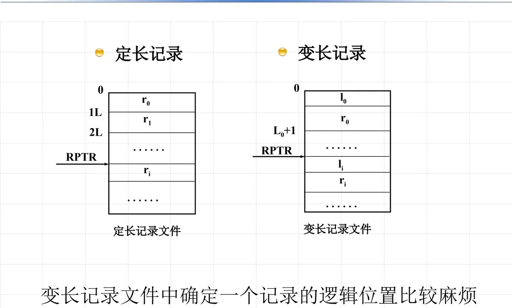

操作系统原理 · 第 9 章 文件系统
9.2 文件的逻辑结构与存取方法
上一节从两种视角看文件：逻辑结构对用户负责，物理结构对存储设备负责。这一节把「用户观点」这一半展开：用户眼里的文件长什么样，文件内部的记录怎么划分、怎么编号，以及用户按什么方式去取用文件里的数据。逻辑结构不只是形式问题——它直接决定了定位一条记录要花多少代价。
1. 文件的逻辑结构
文件的逻辑结构是从用户角度看到的文件面貌。按文件内部有没有结构，逻辑结构分成两大类：流式文件和记录式文件。
（1）流式文件
流式文件是相关的有序字符的集合，是无结构的。也就是说，文件在用户眼里就是一串首尾相接的字符（字节），系统不替它划分记录，也不解释这些字符的含义：从哪里断句、哪一段算一个「条目」，完全由用户自己决定。
相应地，流式文件是按信息的个数或以特殊字符为界进行存取的：或者一次读入、写出若干个字符，或者以某个特殊字符（如换行符）作为一次读写的分界。因为文件本身没有记录边界，系统只能靠这两种线索来切分信息。
流式文件有三个特点：
- 空间利用上比较节省，最简单、最方便——没有记录结构，也就没有维护记录边界和记录索引的额外开销；
- 顺序存放，连续的字符流形式很容易和物理设备上传输的数据对应——设备按字符流收发，文件也按字符流组织，中间几乎不需要转换；
- 用户可以灵活地组织其文件内部的逻辑结构——记录的划分由用户在自己的程序里定义，系统不作约束。
（2）记录式文件
记录式文件是一种有结构的文件：这种文件在逻辑上总是被看成一组连续顺序的记录的集合，文件中的记录按顺序编号为记录 0、记录 1、……、记录 n。系统知道文件是由一条条记录组成的，因此可以直接以记录为单位进行读写。
由于「记录」这种划分方式正符合人们对数据的直观认识，逻辑记录的概念被应用于许多场合，特别是在数据库管理系统中已经是必不可少的了。
记录又可分为定长记录与变长记录，这两类记录的文件在定位方式上差别很大。

图 1 把两类记录文件的差别画在了一起。定长记录文件里每条记录占据的长度一样，记录在文件中按固定间隔排列，位置是整齐、可预期的；变长记录文件里每条记录的长度互不相同，只能借助指针（图中的 RPTR）一条条指出记录所在的位置，定位时要顺着指针去找，开销自然更大——课件也明确点出「变长记录文件中确定一个记录的逻辑位置比较麻烦」。可见，逻辑记录怎么划分，直接决定了存取一条记录要付出多少代价。
（3）两种文件的比较
用两个比喻就能看清它们的差别：流式文件就像给用户一张白纸，用户可以将他的信息任意地写到纸上，没有任何格式上的限制；记录式文件就像给用户一张表格，用户要按表格规定的格式填信息，格式是固定的，但填好之后系统处理起来也更方便。
管理代价上的区别是：流式文件管理简单，记录式文件需要管理记录结构信息。系统要为记录式文件额外记录「一条记录多长、一共有几条、第几条在哪里」这类信息，这份开销换来的正是按记录存取的能力。
2. 文件的存取方法
逻辑结构说的是文件内部「长什么样」，存取方法说的是用户「怎么取数据」。常用的存取方法有两种。
（1）顺序存取
顺序存取的特点是：后一次存取总是在前一次存取的基础上进行的。正因为存取位置总是接着上一次往下走，顺序存取时不必给出具体的存取位置——系统顺着当前位置继续读即可。磁带上的文件是典型的顺序存取对象，要读到某一条记录，只能从前面一条条读过去。
（2）随机存取
随机存取则是用户以任意次序请求某个记录，不必从上一次的位置接着往下走。代价是必须自己给出位置：随机存取时要指出起始存取位置，例如记录号、字符序号。磁盘上的文件支持随机存取，所以「直接取第几条记录」是可行的。
两种存取方法与前面的逻辑结构是配套的：记录式文件如果每条记录定长，给出记录号就能确定位置，最便于随机存取；变长记录因为定位麻烦，顺序存取更自然，随机存取则要借助额外的指针信息。这也是选择文件逻辑结构时的重要依据。
本节小结
- 文件的逻辑结构是从用户角度看到的文件面貌，按有无结构分为流式文件与记录式文件两类；
- 流式文件是相关的有序字符的集合，按信息的个数或以特殊字符为界存取；它的优点是节省空间、简单方便、与设备上的字符流传输容易对应，且用户可灵活组织文件内部的逻辑结构；
- 记录式文件在逻辑上是一组连续顺序的记录的集合，记录按 0、1、……、n 编号，逻辑记录的概念在数据库管理系统等场合已必不可少；记录分定长记录与变长记录；
- 流式文件像白纸、记录式文件像表格：前者管理简单，后者需要额外管理记录结构信息，但换来按记录存取的能力；
- 定长记录文件的记录按固定间隔排列，变长记录文件中确定一个记录的逻辑位置比较麻烦；
- 存取方法分顺序存取（后一次基于前一次，不必给出存取位置）与随机存取（可以任意次序请求记录，但要指出起始存取位置，如记录号、字符序号）；存取方法与逻辑结构相互制约，定长记录最便于随机存取。